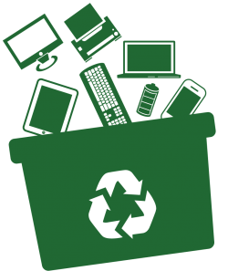
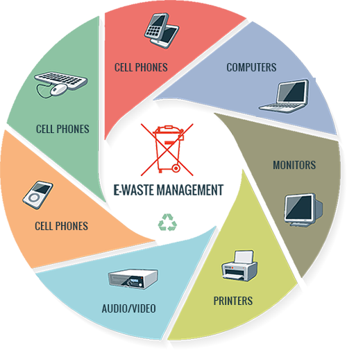
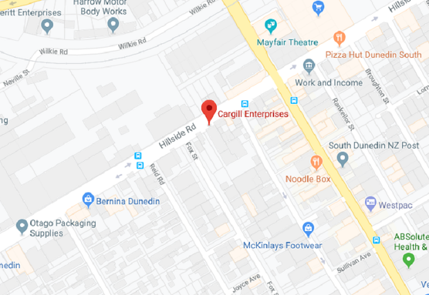

Electronic Waste

Electronic waste need to diposed of properly to ensure that the harmful chemicals and metals within electronics do not effect the enviroment.
Where to dispose of e-Waste?
When recycling electronic waste there comes with a required small cost that vary depending on the item, cost or weight of the equipment that you bring on site.
| Item | Cost |
|---|---|
| Laptops | From $9.00 each |
| Computer Servers | From $18.00 |
| Printers - Small | From $6.00 - $12.00 |
| Photocopier | From $30.00 |
| Sundey Electronics | From $8.00 |
| Monitors / TV | From $25.00 |
| Networking Equipment | From $3.00 |
| Batteries | From $5.00 per Kg |
| Keyboard | From $3.00 |

Cargill Enterprises
Location: 199 Hillside Road, South Dunedin 9012
Phone: 03-455 5119
 Learn More| Monday | 8am - 4:30pm |
| Tuesday | 8am - 4:30pm |
| Wednesday | 8am - 4:30pm |
| Thursday | 8am - 4:30pm |
| Friday | 8am - 4:30pm |
| Saturday | Closed |
| Sunday | Closed |